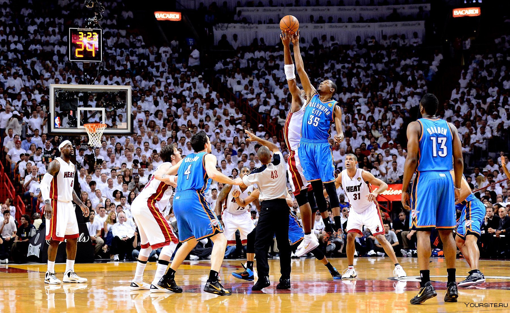

Кристапс Порзингис высказался о своём участии в плей-офф в нынешнем сезоне
Бигмен «Бостон Селтикс» Кристапс Порзингис рассказал о своих мыслях накануне грядущего плей-офф в НБА. «В прошлом году во время плей-офф я просто сидел дома в Латвии, смотря игры и следя за результатами. Тогда я думал, что, конечно, здорово закончить сезон пораньше, но ведь когда он заканчивается, делать оказывается абсолютно нечего. Что может быть лучше, чем играть в баскетбол в эту пору? Ничего», — приводит слова Порзангиса Eurohoops. Кристапс попал в НБА в 2015 году. На счету Порзингиса 10 игр в плей-офф за всю карьеру. Все они состоялись во время пребывания латвийского баскетболиста в «Даллас Маверикс». Порзингис перешёл в «Бостон» во время предыдущего межсезонья в результате обмена с «Вашингтон Уизардс». «Селтикс» уже обеспечили себе первое место в Восточной конференции.
Данте Экзам сравнил европейских и американских фанатов
Баскетболист «Даллас Маверикс» и экс-игрок «Партизана» Данте Экзам высказал своё мнение об американских и европейских болельщиках. «Нет, здесь тоже классные болельщики. Понятное дело, что в Сербии вообще другой уровень. Не хочу обидеть фанатов «Маверикс», они классные, но в Европе всё вообще на другом уровне в этом плане», — приводит слова Экзама Basket News в социальной сети X (ранее — Twitter). Экзам был задрафтован под пятым номером на драфте 2014 года, после чего провёл пять лет в составе «Юты Джаз». С 2019 по 2021 Данте играл за «Кливленд Кавальерс», а затем перебрался в Европу, где провёл по одному сезону в «Барселоне» и «Партизане». Перед нынешним сезоном защитник вернулся в НБА.
предыдущая следующая